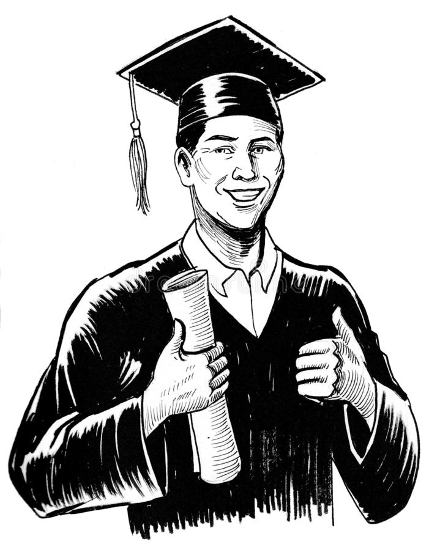

Actively looking for an internship related to data analytics, cybersecurity or computer hardware architecture.
Relevant Experience
- Potomac Pizza - Assistant Manager
- Assisted store manager increased net sales by 8.2% between January 2019 – January 2020 by improving delivery times, customer satisfaction, and increasing consistency of product availability
- Actively provide leadership to a staff of 18 working in shifts up to 10 at a time
- Order over eighty individual items through Sysco twice a week, forecasting future sales to maintain an efficient amount of product and minimize waste
- Hershey's restaurant - Server
- Backed up other crew members to maintained workflow at an efficient level without hesitation
- Diligently handled customer complaints by listening, acknowledging, and providing a solution
- Responsible for handling waitlist as well as managing sitting arrangements
- Liberty's Promise - Elected program President
- Facilitated meeting discussions by promptly asking questions
- Introduced guest speakers to program
- Coordinated events with program director to increased engagement by communicating ideas from members to director